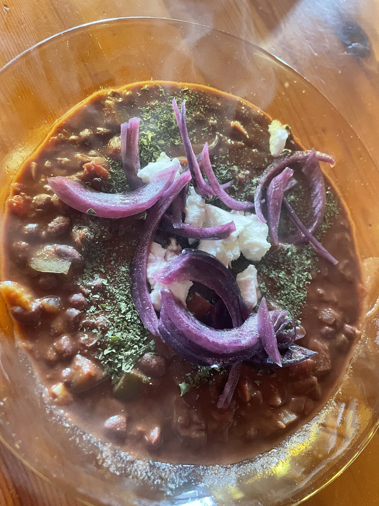

Lentejas guisadas con feta y cebolla encurtida
Ingredientes
4×
- 1 cebolla
- 1 pimiento
- 1 diente de ajo
- aceite de oliva
- 2 tomates
- 300 g de lentejas pardinas
- 1 l de agua
- 100 g de feta
- cebolla morada encurtida
- perejil

Preparación
Paso 1
Rehogar 1 cebolla, 1 pimiento y 1 diente de ajo picados en aceite de oliva. Añadir 2 tomates rallados.
Paso 2
Añadir 300 g de lentejas pardinas, cubrir con 1 l de agua, salar y cocer 35min, hasta que estén tiernas y espesas.
Paso 3
Servir con 100 g de feta desmenuzado, cebolla morada encurtida y perejil.
Resumen
1 cebolla
1 pimiento
1 diente de ajo
aceite de oliva
2 tomates
Rehogar Añadir
300 g de lentejas pardinas
1 l de agua
100 g de feta
cebolla morada encurtida
perejil
Añadir cubrir salar cocer